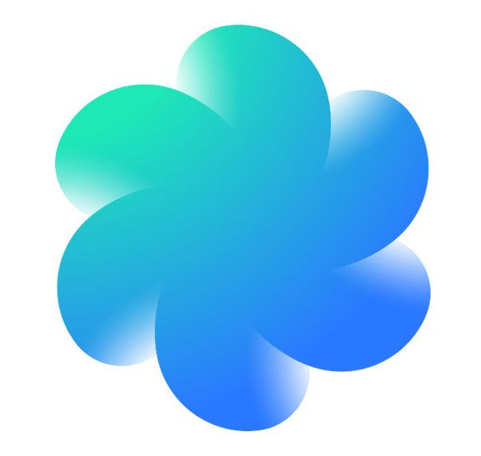

Daydream Labs
Product Designer & Engineer, 2016 - 2018
Daydream Labs is an innovation driven team at Google that builds prototypes to explore and evaluate different use cases and product ideas in VR and AR.

Daydream Labs is an innovation driven team at Google that builds prototypes to explore and evaluate different use cases and product ideas in VR and AR.
At Google Daydream, I designed and prototyped dozens of VR / AR applications that varied from small, one-week prototypes that explored specific interactions to large-scale, multi-month projects targeted for launch.
During this time, I owned entire features from conception to design (visual & interaction) to near-production implementation, and in a couple cases, spearheaded entire projects with product managers as well, a role which entailed a good deal of higher-level product thinking (market fit, user need, fitting into Google's existing ecosystem, etc.)
I built prototypes that varied from low-fidelity mocks and quick proof-of-concept, to complex, production-quality applications that combined dozens of features and interactions.
Within a team, my biggest asset was my ability to identify and conceptualize high-potential use cases, and quickly turnaround functional prototypes that were aesthetic, intuitive, and polished. This allowed ideas to be quickly evaluated and helped seed faster our learnings into the rest of Daydream.
In November of 2017, I gave a talk at Futureland that distilled learnings from Daydream Labs experiments into ten principles for VR and AR design.